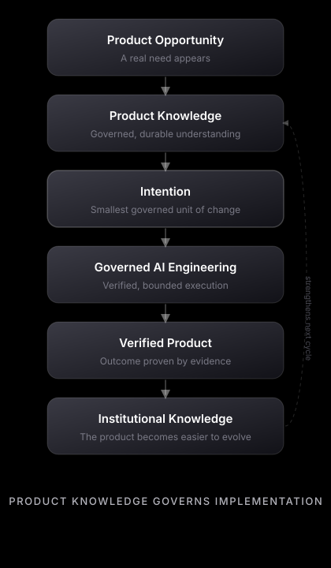

An open standard for
AI Product Engineering
A standard to govern how products evolve when AI executes most of the engineering — without losing product knowledge along the way.
Humans govern products.
Product Knowledge governs implementation.
AI executes engineering.Software output is no longer scarce
AI can produce code, tests, and documentation at machine speed. Generating software is no longer the expensive step.
Product coherence became the constraint
When output is cheap, the scarce asset is preserving product knowledge — architecture, decisions, and verified understanding — as the product grows.
A standard to govern evolution
An open standard for how humans and AI build products without losing knowledge: governed Intentions, verified outcomes, and evidence at every gate.
How a product evolves
One governed path from opportunity to institutional knowledge.

The official Orivus product evolution flow
Evidence, not claims
Experimental does not mean theoretical. Validated through Reference Validation (FV-001, FV-002) and Open Source Release Audit (OSR-001).
FV-002 PASS
Value-driven milestones — each milestone must deliver verifiable product value, not technical layers alone (GS-14).
ValidatedFV-001 PASS
Sequential milestone execution under the Milestone Transaction Protocol — verified with per-milestone evidence.
ValidatedOSR-001 PASS
Open-source release audit: neutrality, adoption path, and documentation completeness for v0.2.
AuditedEvidence-driven
v0.3 and beyond advance only through friction and outcomes reported by real adopting teams — not through new theory.
GovernedWhy code generation is not enough
Problem → Prompt → Code optimizes output, not
evolution. At scale it produces:
- architectural drift — nothing enforces the architecture;
- knowledge trapped in chat history;
- no boundary between AI and human decisions;
- completion claimed by confidence, not evidence.
AI Product Engineering
The industry talks about AI coding and agentic development. The Orivus AI Product Framework names a different category: AI Product Engineering — evolving products when AI executes most of the implementation. The principle underneath is unchanged: Product Knowledge governs implementation.
Your most durable asset is no longer the code. It is the Product Knowledge that lets the product keep evolving after the session, the model, or the tool changes.
- A specification for knowledge-driven engineering
- Governed, evidence-based product evolution
- Technology-, vendor-, and product-independent
- Portable across teams, tools, and AI models
- A prompt library
- A coding agent or IDE plugin
- A methodology for one company or product
- A replacement for architecture, testing, or design
Start here
| If you want to… | Go to |
|---|---|
| Start in five minutes | Quick Start |
| Understand why the standard exists | Why this standard exists |
| See how the framework compares to other approaches | Comparison |
| See the standard applied to a product | Inventory Platform example |
| Read the essay | Why Product Knowledge Matters |
| Read the normative rules | Specifications |
An experimental standard
Published to be studied, adopted, tested, and improved through real use. Product Knowledge governs implementation — validated through FV-001, FV-002, and OSR-001, not marketing.